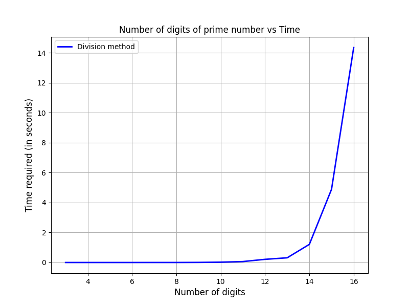

Fermat's primality test
Large prime numbers
Prime numbers are of utmost importance in a field like number theory. In cryptography, there are several encryption methods that are based upon finding large prime numbers. But what is a large prime number? Loosely, a large number can be said to be any number that requires more than 16 binary bits in order to be represented in a computer system. For example, the number \(3660438061\) is represented as \[11011010001011011101101000101101_2\]in binary, requiring 32 bits. Is this a prime number? Our usual approach should be the trial division approach, which is detailed in the next segment.
Trial division approach
The trial division method is the easiest known algorithm to check for the primality. Given a number \(n\), it basically involves checking divisibility of \(n\) for all the numbers below \(\sqrt n\). If \(n\) is a composite number, there is going to exist one number \(d\leq\sqrt n\) such that \(d\) divides \(n\) (Consult back to AMTH101 or AMTH302 if you cannot recall the proof). So the algrithm has a time complexity of \(O(\sqrt n)\).
Algorithm: Primality by division
1. Take input: n
2. For all d less than sqrt(n):
If n%d == 0 is satisfied, we output composite and go to 4
3. If all d are exhausted, we output prime
4. End
This relatively simple algorithm comes with a problem, however, as we increase the number \(n\) we will also increase the runtime required for the primality test to finish. Below is a figure of the time required to check for the primality of this algorithm with the number of digits a number has.
As we can see, there is an exponential jump in the time required to find the primality of a number if we start increasing the number of digits it has. In most use cases of prime numbers, we require the machine to be able to check for and find many prime numbers in the shortest amount of time possible. However, if it takes 10 seconds to find the primality for a number, it would be a disaster when the seconds add up to hours lost in computation (and energy) cost for each operation! So the problem is this: given a large number, is it possible to find it's primality in some other method such that it doesn't require as much time?
Fermat's little theorem
In the course AMTH302, we learn about Fermat's little theorem. The theorem states that, for a prime number \(p\) and a coprime \(a\), it is always true that\[a^{p-1}\equiv 1\text{ mod }p\]The converse isn't necessarily true. (Can you find what the converse is? If not, a quick review of logic from AMTH101 might help you.) Let's take any number \(n\) whose primality is not known. If all numbers (greater than one) \(a\) that are less than \(n\) follow Fermat's little theorem, then it can be surely said that the number \(n\) is prime. On the other hand, if there exists \(a\) that doesn't follow the theorem, then it can be said that the number is composite. Using this we can find a better and much faster algorithm for checking primality.
Fermat's primality test: A probabilistic approach
From the previous section, it is clear that for any given number \(n\), we can check if it is prime or not by choosing numbers \(a\) and seeing if these numbers satisfy Fermat's little theorem. However, if we choose to check all numbers that are lesser than \(n\), then the algorithm will actually perform worse than the trial division appraoch (can you imagine why?). So we approach this problem probabilistically. We only check with, say, 5 or 10 randomized numbers that are less than \(n\) and check if they follow Fermat's little theorem. This might prompt you to think that the algorithm may wrongly label composites as primes and vice versa. For that we discuss two cases.
Algorithm outputs composite: The number is surely composite, since the condition for being a composite is that we find any number \(a\) such that Fermat's little theorem is not true for it and the number \(n\).
Algorithm outputs prime: The number is probably prime, meaning that it may not be prime or may be.
Algorithm: Fermat's primality test
1. Take input: n
2. Choose a value of k, the number of values to check (usually 5 or 10)
3. Choose a random integer a less than n:
See if (a^(n-1))%n == 1. If not, stop the execution and print composite
4. Repeat step 3 k times. If the condition is satisfied each time print prime
5. End
This figure shows that the FPT algorithm can run in almost constant time for large numbers, which is an absolutely mind-blowing improvement over the exponentially increasing time required by the naive trial division approach. This alone can make one think that the Fermat's primality test is all powerful, but there is a catch: it's not always 100% accurate.
Accuracy of the test
Since the test is probabilistic in nature (we are choosing only to check \(k\) amount of numbers in the algorithm), it is natural to question the accuracy of the method. It is possible to argue that there is very minimal chance for this to fail in the case of checking for primes (check this link for more info), but for now we are going to check the primality for numbers from 2 to 1000. The outcome is shown below.
As it's seen here, all the numbers from \(2\) and \(1000\) are labelled correctly using this algorithm. But there is a catch. There are composite numbers called Carmichael numbers, which have this unique property: for every number \(a\) that is coprime to a Carmicheal number \(n\), it follows the property \[a^{n-1}\equiv 1\text{ mod }n\]This gives the illusion of \(n\) being a prime number when Fermat's primality test is used, which means that it is possible for the algorithm to mislabel a Carmichael number as prime in some rare cases. Below are the accuracies found for three Carmichael numbers (assuming we take \(k=5\)):
| Carmicheal number | Accuracy |
| 561 | 94 out of 100 times |
| 1105 | 84 out of 100 times |
| 10585 | 75 out of 100 times |
As it is seen here, for bigger Carmicheal numbers, the algorithm has a higher rate of inaccuracy. It's generally not a good idea to use this algorithm for primality checking, but it provides a theoretical basis for other tests such as Miller-Rabin primality test.